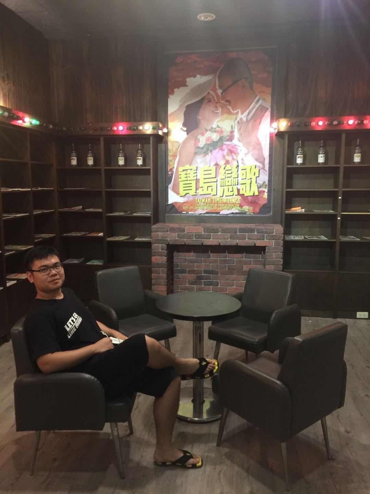

陳楊霖
科系：電子三庚
學號：06374036
興趣：籃球，足球


個人履歷
姓名：陳楊霖
性別：男
年齡：20
健康狀況：良好
政治面貌：共青團團員
籍貫：福建省閩侯縣
家庭背景：個體戶
所學專業：電子信息工程
學曆：本科(在讀)
教育背景：
2002-2008年 福建省福州市倉山區實驗小學
2008-2012年 福建省福州市黎明中學
2012-2015年 福建省閩侯縣第一中學
2008-2012年 福建省福州市黎明中學
2012-2015年 福建省閩侯縣第一中學
主要社會工作:
小學：班長
中學:體育委員,校足球隊隊長
高中:班長
中學:體育委員,校足球隊隊長
高中:班長
專業技能:
接受過全方位的大學基礎教育,受到良好的專業訓練和能力的培養,通過了國家二級計算機考試，在計算機方面，熟悉Internet互聯網的基本操作，略懂C語言，Java語言
修習期間主要學習了關於電子信息的專業知識如電子科學與技術、信息與通信工程、計算機科學與技術，能夠略懂一二，並具有一定的編程能力較系統地掌握本專業領域
寬廣的技術基礎理論知識，適應電子和信息工程方面廣泛的工作範圍; 掌握電子電路的基本理論和實驗技術，具備分析和設計電子設備的基本能力; 掌握信息獲取、處理
的基本理論和應用的一般方法，具有設計、集成、應用及計算機模擬信息系統的基本能力； 瞭解信息產業的基本方針、政策和法規，瞭解企業管理的基本知識； 瞭解電
子設備和信息系統的理論前沿，具有研究、開發新系統、新技術的初步能力； 掌握文獻檢索、資料查詢的基本方法，具有一定的實際工作能力
修習期間主要學習了關於電子信息的專業知識如電子科學與技術、信息與通信工程、計算機科學與技術，能夠略懂一二，並具有一定的編程能力較系統地掌握本專業領域
寬廣的技術基礎理論知識，適應電子和信息工程方面廣泛的工作範圍; 掌握電子電路的基本理論和實驗技術，具備分析和設計電子設備的基本能力; 掌握信息獲取、處理
的基本理論和應用的一般方法，具有設計、集成、應用及計算機模擬信息系統的基本能力； 瞭解信息產業的基本方針、政策和法規，瞭解企業管理的基本知識； 瞭解電
子設備和信息系統的理論前沿，具有研究、開發新系統、新技術的初步能力； 掌握文獻檢索、資料查詢的基本方法，具有一定的實際工作能力
興趣與特長:
喜愛文體活動,熱愛自然科學
小學期間曾進行過專業小號訓練,校樂團成員,參加過多次重大演出
中學期間,曾參加課外活動小組和地理課外活動小組,參加過多次野外實踐和室內實踐活動
喜愛足球運動,曾擔任中學足球校隊隊長,並率隊參加多次比賽.曾獲福州市足球聯賽(中學組)第八名
小學期間曾進行過專業小號訓練,校樂團成員,參加過多次重大演出
中學期間,曾參加課外活動小組和地理課外活動小組,參加過多次野外實踐和室內實踐活動
喜愛足球運動,曾擔任中學足球校隊隊長,並率隊參加多次比賽.曾獲福州市足球聯賽(中學組)第八名
自我評價：
活潑開朗,樂觀向上,興趣廣泛,適應力強,勤奮好學,腳踏實地,認真負責,堅毅不拔,吃苦耐勞,做事謹慎，有責任感，不怕吃苦，勤奮好學,但容易激動
有較強的語言表達能力，文筆流暢
有較強的語言表達能力，文筆流暢
將來的工作是對我知識的檢驗，也是對我人生的挑戰。我會在工作中不斷地完善自己，提高自己，適應工作的需要。
所以我希望找一份與自身知識結構相關的工作，可以有更大的空間來證明自己，發展自己!